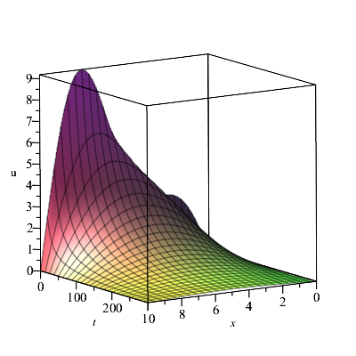

3.1. Çözümün Varlığı
Kayıt Tarihi:
Son Güncelleme:
Bu derste ısı iletim denkleminin çözümünün varlığını kanıtlayacağız. Aslında önceki bölümlerde keşfettiğimiz bilgileri kullanarak istenen özelliklerde olan bir fonksiyona, yani ısı iletim denkleminin çözümü olan bir fonksiyona, yakınsak olan Fourier serilerinin varlığını kanıtlayacağız.
Anahtar Kelimeler: çözümün varlığı · Fourier serisi · Heine-Borel teoremi · Isı denklemiBirinci bölümde $x-$ekseni boyunca $x=0$ ile $x=a$ noktaları arasında yerleşmiş ısıtılımış bir çubuğu ele almıştık. $$D:=\{(x,t)\in\mathbb{R}^2:\;\, 0\lt x\lt a, \,\, t>0 \}$$ ve $$\overline{D}:=\{(x,t)\in\mathbb{R}^2:\;\, 0\leq x\leq a, \,\, t\geq0 \}$$ kümelerini tanımlayıp $D$ kümesinde ısı iletim denklemini sağlayan, her $t\geq0$ için $x=0$ ve $x=a$ noktalarında sıfır değerini alan ve $f$ verilen sürekli bir fonksiyon olmak üzere $0\leq x\leq a$ için $u(x,0)=f(x)$ eşitliğini sağlayan $C^2$ sınıfından sürekli bir $u:\overline{D}\rightarrow\mathbb{R}$ fonksiyonunun varlığı sorusunu düşünmüştük.
Fakat fiziksel problemlerde süreklilik ağır bir şarttır ve bazı durumlarda $f$ fonksiyonunun parçalı sürekli kabul edilmesi gerekir, bunun için ele aldığımız problemi biraz değiştireceğiz. Yeni durumda aradığımız $u:\overline{D}\rightarrow\mathbb{R}$ fonksiyonu $D$ kümesinde $C^2$ sınıfından, $D_0:=\left\{(x,t):\in\overline{D}:\; t>0 \right\}$ kümesinde sürekli ve verilen parçalı sürekli bir $f$ fonksiyonu için \begin{eqnarray} u_{t}=ku_{xx} ,&& \qquad(x,t)\in D\text{ için}\label{bvp-mod-1}\tag{3.1.1}\\ u(0,t)=0, && \qquad t>0\text{ için} \label{bvp-mod-2}\tag{3.1.2}\\ u(a,t)=0, && \qquad t>0\text{ için} \label{bvp-mod-3}\tag{3.1.3}\\ u(x,0)=f(x), && \qquad0\leq x\leq a \text{ için}\label{bvp-mod-4}\tag{3.1.4}\\ u(x,t)\rightarrow0, && \qquad t\rightarrow0\text{ ve }0\leq x\leq a\text{ için} \label{bvp-mod-5}\tag{3.1.5} \end{eqnarray}eşitliklerini sağlayan bir fonksiyondur. Yukarıdaki \eqref{bvp-mod-4} ve \eqref{bvp-mod-5} koşulları $f$'nin sürekli olduğu $x$ noktalarında aranmaktadır. Dikkat edilirse $f$ fonksiyonu $[0,a]$ aralığında sürekli olmayabileceğinden $u$ fonksiyonunun $\overline{D}$ kümesinde sürekli olması gerekmez, bunun yerine $D_0$ kümesinde sürekli olmasını istiyoruz. Ayrıca \eqref{bvp-mod-5} gereği sabitlenmiş $x\in(0,a)$ noktası $f$'nin bir süreklilik noktası olmak üzere $u$ fonksiyonunun $t=0$ noktasında $t$ değişkenine göre sürekli olması gerekmektedir.
Bu bölümde önce bu yeni sınır değer problemini, daha sonra da orijinal problemimizi çözeceğiz. Daha önce ilk bölümde $c_n$ keyfi sabitleri için \begin{equation} \label{eq:bvp-toplam-1} \tag{3.1.6} \sum\limits_{n=1}^{\infty}c_ne^{-n^2\pi^2kt/a^2}\sin\frac{n\pi}{a}x \end{equation} serisinin her teriminin ısı denklemini ve uç nokta koşullarını sağladığını göstermiştik. Bu seriyi yakınsak ve toplamını da $u(x,t)$ kabul edersek başlangıç koşulu \begin{equation} \label{eq:bvp-initval-1} \tag{3.1.7} \sum\limits_{n=1}^{\infty}c_n\sin\frac{n\pi}{a}x=f(x) \end{equation} halini alır. Bir önceki bölümde eğer $c_n$'ler $f$ fonksiyonunun $(0,a)$ aralığındaki Fourier sinüs serisi katsayıları ise, yani \begin{equation} \label{eq:bvp-cn} \tag{3.1.8} c_n=\frac{2}{a}\int_{0}^{a}f(x)\sin\frac{n\pi}{a}x\,dx \end{equation} şeklinde ise ve her $x\in(0,a)$ noktasında $f$ fonksiyonunun sağ ve sol türevleri mevcutsa \eqref{eq:bvp-initval-1} eşitliğinin $f$'nin sürekli olduğu her $x\in(0,a)$ noktasında sağlandığını gördük. Bunlar bize \eqref{eq:bvp-cn} katsayılarıyla birlikte \eqref{eq:bvp-toplam-1} serisinin sınır değer problemimizin çözümü olduğunu düşündürebilir fakat \eqref{eq:bvp-toplam-1} serisi hakkında bildiklerimiz sadece her teriminin $\overline{D}$ kümesinde sürekli ve $D$ kümesinde $C^2$ sınıfından olduğu, $\overline{D}$ kümesinde $(x,0)$ biçimindeki her noktada yakınsak ve $f$ fonksiyonunun sürekli olduğu her $x$ noktasında toplamının \eqref{eq:bvp-initval-1} eşitliğini sağladığıdır. Henüz şunları bilmiyoruz:
- her $(x,t)\in\overline{D}$ için seri yakınsak mı?
- eğer yakınsaksa toplamı $D_0$ kümesinde sürekli ve $D$ kümesinde $C^2$ sınıfından mı?
- eğer yakınsaksa toplamı \eqref{bvp-mod-1}-\eqref{bvp-mod-3} ve \eqref{bvp-mod-5} koşullarını sağlıyor mu?
Daha çok işimiz varmış gibi görünse de aslında öyle değil, problemin önemli ve zahmetli kısmını, yani \eqref{eq:bvp-initval-1} eşitliğini önceki bölümde kanıtladık. Yukarıda sıraladığımız diğer sorunların çözümü nispeten basit olacak, bunları çözmek için sıklıkla düzgün yakınsaklık kavramını kullanacağız. Çözümü aşağıda vereceğimiz sonuçlarla parça parça elde edeceğiz.
Lemma 3.1.1
\eqref{eq:bvp-toplam-1} ile verilen seri $D_0$ kümesinde sürekli olan ve \eqref{bvp-mod-2}-\eqref{bvp-mod-4} koşullarını sağlayan bir fonksiyona yakınsar.İspat: Teorem 2.4.1 gereği $t=0$ için \eqref{eq:bvp-toplam-1} serisinin yakınsak olduğunu ve toplamının \eqref{bvp-mod-4} eşitliğini sağladığını biliyoruz. Ayrıca Riemann-Lebesgue teoremi gereği $n\rightarrow\infty$ için $c_n\rightarrow0$ olduğundan her $n\in\mathbb{N}$ için $|c_n|\lt M$ olacak şekilde bir $M$ sabiti vardır. Şimdi $D_{t_0}:=\{(x,t)\in D_0:\; t\geq t_0 \}$ kümesinde $$\left|c_ne^{-n^2\pi^2kt/a^2}\sin\frac{n\pi}{a}x \right|\lt Me^{-n^2\pi^2kt_0/a^2}$$ eşitsizliği sağlanır. Cauchy kök testi gereği $$\sum\limits_{n=1}^{\infty}Me^{-n^2\pi^2kt_0/a^2}$$ serisi yakınsak olduğundan Weierstrass-M testi gereği \eqref{eq:bvp-toplam-1} serisi $D_{t_0}$ kümesinde düzgün yakınsak olur. Burada $t_0$ keyfi olduğundan seri $D_0$ kümesinde deyakınsak olur, ayrıca $t=0$ için yakınsaklık bilindiğinden \eqref{eq:bvp-toplam-1} serisinin $\overline{D}$ kümesinde yakınsaklığı elde edilmiş olur. Diğer yandan seri $D_{t_0}$ kümesinde düzgün yakınsak olduğundan toplamı bu kümede sürekli olur, $t_0$ keyfi olduğu için $D_0$ kümesinde de sürekli olacaktır. Ayrıca \eqref{eq:bvp-toplam-1} serisinin \eqref{bvp-mod-2} ve \eqref{bvp-mod-3} eşitliklerini sağladığı açıktır, çünkü $x=0$ ve $x=a$ için toplamı sıfır olur.$$\tag*{$\blacksquare$}$$
Lemma 3.1.2
\eqref{eq:bvp-toplam-1} serisinin toplamı $D$ kümesinde $C^2$ sınıfındandır ve \eqref{bvp-mod-1} eşitliğini sağlar.İspat: \eqref{eq:bvp-toplam-1} serisinin terim terim $t$ değişkenine göre türevlenmesiyle elde edilen $$\sum\limits_{n=1}^{\infty}\left(-\frac{n^2\pi^2}{a^2}k\right)c_ne^{-n^2\pi^2kt/a^2}\sin\frac{n\pi}{a}x$$ serisinin keyfi bir $t_0>0$ sayısı için $D_{t_0}$ kümesinde düzgün yakınsak olduğu Lemma 3.1.1'deki gibi Weierstrass-M testi kullanılarak gösterilebilir, ayrıca özel olarak verilen bir $x\in(0,a)$ sayısı için $[t_0,\infty)$ aralığında düzgün yakınsaktır. Böylece eğer serinin toplamı $u(x,t)$ ise yukarıdaki serinin toplamı $t\geq t_0$ için $u_t(x,t)$ olur, $t_0$ ve $x$ sayıları keyfi olduğundan yukarıdaki serinin toplamı $D$ kümesinde $u_t(x,t)$ olur.
Benzer şekilde \eqref{eq:bvp-toplam-1} serisinin iki defa $x$ değişkenine göre terim terim türevlenmesiyle elde edilen $$\sum\limits_{n=1}^{\infty}\left(-\frac{n^2\pi^2}{a^2}\right)c_ne^{-n^2\pi^2kt/a^2}\sin\frac{n\pi}{a}x$$ serisinin de $D$ kümesinde toplamının $u_{xx}(x,t)$ olduğu gösterilebilir. Yukarıdaki iki seri karşılaştırılırsa $D$ kümesinde $$u_t=ku_{xx}$$ eşitliğinin sağlandığı görülür.
Diğer yandan yukarıdaki seriler $D_{t_0}$ kümesinde düzgün yakınsak olduklarından bu kümede toplamları süreklidir, aynı sebeple $u_{tx}$ ve $u_{tt}$ fonksiyonları da bu kümede sürekli olacaktır. $t_0$ keyfi olduğundan bu fonksiyonlar $D$ kümesinde de sürekli olurlar yani $u$ fonksiyonu $D$ kümesinde $C^2$ sınıfından olur.$$\tag*{$\blacksquare$}$$
Şimdi ele aldığımız problemin tam çözümünün varlığını verebiliriz.
Teorem 3.1.1
$f:(0,a)\rightarrow\mathbb{R}$ fonksiyonu $(0,a)$ kümesinde parçalı sürekli olsun, ayrıca bu aralıkta sağ ve sol türevleri mevcut olsun. $c_n$ sayıları da $f$ fonksiyonunun $(0,a)$ aralığındaki Fourier sinüs serisi katsayıları olsun. Bu durumda \eqref{eq:bvp-toplam-1} serisi $D$ kümesinde $C^2$ sınıfından olan, $D_0$ kümesinde sürekli olan ve \eqref{bvp-mod-1}-\eqref{bvp-mod-5} sınır değer problemini sağlayan bir $u:\overline{D}\rightarrow\mathbb{R}$ fonksiyonuna yakınsar.İspat: Diğer kısımları yukarıdak verdiğimiz lemmalarla kanıtladığımız için sadece \eqref{bvp-mod-5} eşitliğini kanıtlamalıyız. Bunun için $$a_n:=c_n\sin\frac{n\pi}{a}x\quad\text{ve}\quad g_n(t):=e^{-n^2\pi^2kt/a^2}$$ olarak tanımlarsak $\sum a_n$ yakınsak bir Fourier serisi, her $n\in\mathbb{N}$ ve her $t\in[0,\infty)$ için $g_{n+1}(t)\leq g_n(t)$, ve her $t\in[0,\infty)$ için $|g_n(t)|\leq1$ olur. Böylece Abel düzgün yakınsaklık testi gereği \eqref{eq:bvp-toplam-1} serisi $[0,\infty)$ aralığında düzgün yakınsaktır ve toplamı süreklidir. Dolayısıyla $t\rightarrow0$ için $u(x,t)\rightarrow u(x,0)$ olur, \eqref{bvp-mod-4} eşitliği gereği de $u(x,t)\rightarrow f(x)$ elde edilmiş olur.$$\tag*{$\blacksquare$}$$
Örnek 3.1.1
Başlangıç sıcaklığı $f(x):=x$ ile verilen 10 cm uzunluğunda bir çelik çubuğu ele alalım. Her $t>0$ için çubuğun uçlarındaki sıcaklık $0^\circ C$ sabit tutulmaktadır. Bu durumda $a=10$ ve çelik için $k=0.00128\,cm^2/sn$ olup $c_n$ katsayıları \eqref{eq:bvp-cn} formülünden $$c_n=\frac{2}{10}\int_{0}^{10}x\sin\frac{n\pi}{10}x\,dx=\frac{20}{n\pi}(-1)^{n+1}$$ olur ve sınır değer probleminin çözümü $$u(x,t)=\frac{20}{\pi}\sum_{n=1}^{\infty}\frac{(-1)^{n+1}}{n}e^{-0.128n^2\pi^2t/100}\sin\frac{n\pi}{10}x$$ olarak elde edilir. Üstel ifadelerden dolayı yeterince büyük $t$ değerleri için bu toplamdaki birçok terim ihmal edilebilir. Bundan dolayı eğer $\alpha:=e^{-0.00128\pi^2}\approx0.987$ olarak tanımlarsak yeterince büyük $t$ sayıları için $$u(x,t)\approx\frac{20}{\pi}\left( \alpha^t\sin\frac{\pi}{10}x-\frac{1}{2}\alpha^{4t}\sin\frac{\pi}{5}x+\frac{1}{3}\alpha^{9t}\sin\frac{3\pi}{10}x \right)$$ yazabiliriz. Bu çözümün belirttiği yüzey ve bazı $t$ değerleri için grafiği aşağıda verilmiştir.
Şekil 3.1: Yukarıdaki örnekte (Örnek 3.1.1) bahsedilen sınır değer probleminin çözümü olan $u$ fonksiyonu.
Şekil 3.2: Yukarıdaki örnekte (Örnek 3.1.1) bahsedilen sınır değer probleminin çözümü olan $u$ fonksiyonunun sırasıyla $t=10, 60, 120\text{ ve }180$ için grafikleri
Şimdi ele aldığımız orijinal probleme dönelim, yani başlangıç sıcaklığı fonksiyonunun sürekli olduğu duruma. Bu durumda \eqref{eq:bvp-toplam-1} serisinin toplamının $\overline{D}$ kümesinde sürekli olmasını ve başlangıç ile sınır koşullarını sağlamasını istiyoruz. Önceki araştırmalarımıza dayanarak sadece serinin toplamının $\overline{D}$ kümesinde sürekli olduğunu göstermemiz gerektiğini söyleyebiliriz, bunun için de \eqref{eq:bvp-toplam-1} serisinin $\overline{D}$ kümesinde düzgün yakınsak olduğunu göstermek yeterlidir. Bu durumda $t=0$ için de düzgün yakınsaklı gereklidir. O halde soru şudur: sürekli ve tek taraflı türevlere sahip olan bir fonksiyonun Fourier serisi düzgün yakınsak mıdır? Bu soru ilk kez Halle Üniversitesinden Heinrich Eduard Heine (1821-1881) tarafından sorulmuş ve ilk cevap da yine kendisi tarafından 1870 yılındaki bir makalesinde verilmiştir. Elbette o yıllarda literatürde düzgün yakınsaklık kavramı tanımlı değildi, Heine bu makalesinde bu kavramı ilk defa kullanmıştır, daha sonra 1872 yılındaki bir makalesinde bu kavramı daha detaylı olarak tanımlamış ve incelemiştir. Heinenin 1870 yılındaki çalışmasındaki diğer bir yenilik ise bir açık aralıklar dizisi tarafından kapsanan kapalı ve sınırlı bir aralığın, bu açık aralıkların sonlu tanesi tarafından kapsandığını gözlemlemesidir. Bu gözlem 1895 yılında Emile Borel (1871-1938) tarafından kanıtlanmıştır ve günümüzde Heine-Borel teoremi olarak bilinir.
Teorem 3.1.2
$a,\alpha\in\mathbb{R}$ ve $a>0$ olsun. Ayrıca $f:[\alpha-a,\alpha+a]\rightarrow\mathbb{R}$ sürekli fonksiyonunun türevi parçalı sürekli olsun ve $f(\alpha-a)=f(\alpha+a)$ eşitliği sağlansın. Bu durumda $f$ fonksiyonunun $(\alpha-a,\alpha+a)$ aralığındaki Fourier serisi $[\alpha-a,\alpha+a]$ aralığında $f$ fonksiyonuna düzgün yakınsaktır.Şimdilik elimizdeki bilgiler yetersiz olduğundan bu teoremin kanıtını daha sonra vereceğiz ama bu teoremi kullanarak aşağıdaki sonucu elde edebiliriz.
Teorem 3.1.3
$f:[0,a]\rightarrow\mathbb{R}$ fonksiyonu sürekli olsun, türevi parçalı sürekli olsun ve $f(0)=f(a)=0$ eşitliğini sağlasın. Ayrıca $c_n$ sayıları da $f$'nin $(0,a)$ aralığında Fourier sinüs serisinin katsayıları olsunlar. Bu durumda \eqref{eq:bvp-toplam-1} serisi \begin{eqnarray*} u_{t}=ku_{xx} ,&& \qquad(x,t)\in D\text{ için}\\ u(0,t)=0, && \qquad t\geq0\text{ için}\\ u(a,t)=0, && \qquad t\geq\text{ için} \\ u(x,0)=f(x), && \qquad0\leq x\leq a \text{ için} \end{eqnarray*}eşitliklerini sağlayan bir $u:\overline{D}\rightarrow\mathbb{R}$ fonskiyonuna yakınsar.İspat: Teorem 3.1.1 gereği sadece $u$ fonksiyonunun $\overline{D}$ kümesinde sürekli olduğunu göstermeliyiz. $f(0)=f(a)=0$ olduğundan $f$ fonksiyonunun $[-a,a]$ aralığında tek olarak genişletilmesiyle elde edilen fonksiyon sürekli olur ve $f(-a)=f(a)$ eşitliğini sağlar. Dolayısıyla Teorem 3.1.2 gereği Fourier serisi olan $$\sum_{n=1}^{\infty}c_n\sin\frac{n\pi}{a}x$$ serisi $[0,a]$ aralığında düzgün yakınsaktır. Bu durumda da $$f_n(x,t):=c_n\sin\frac{n\pi}{a}x\quad\text{ve}\quad g_n(x,t):=e^{-n^2\pi^2kt/a^2}$$ olarak tanımlanırsa Abel düzgün yakınsaklık teoremi gereği bu seri $\overline{D}$ kümesinde düzgün yakınsak olur ve toplamı süreklidir.$$\tag*{$\blacksquare$}$$
2.8. Fourier Serilerinin İntegrali
Fourier Analizi
3.2. Çözümün Tekliği ve Kararlılığı